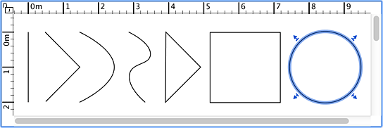

Per disegnare polilinee e curve, devi prima scegliere la voce di menu Piano > Crea polilinee o seleziona lo strumento Crea polilinee
Lo strumento Crea
polilinee
È possibile creare una nuova polilinea facendo clic nella piantina nel punto iniziale della nuova polilinea, quindi in ogni punto della polilinea fino a
fare doppio clic sul punto finale o premere il tasto Esc. Se il doppio clic finale si trova sul punto iniziale, il percorso della polilinea è
chiuso, con conseguente creazione di un poligono. Se premi il tasto Ctrl (o il tasto alt in Mac OS X) mentre disegni il primo segmento,
sarà creata una curva se la polilinea conta almeno 3 punti.
Le polilinee e le curve appaiono solo nel piano e non hanno
rappresentazione nella vista 3D.
|  |
| Varie polilinee, curve e poligoni |
Per terminare il disegno di polilinee, scegli Piano > Seleziona o usa lo strumento Seleziona (o un altro strumento).
 Lo strumento Seleziona Lo strumento Seleziona
|